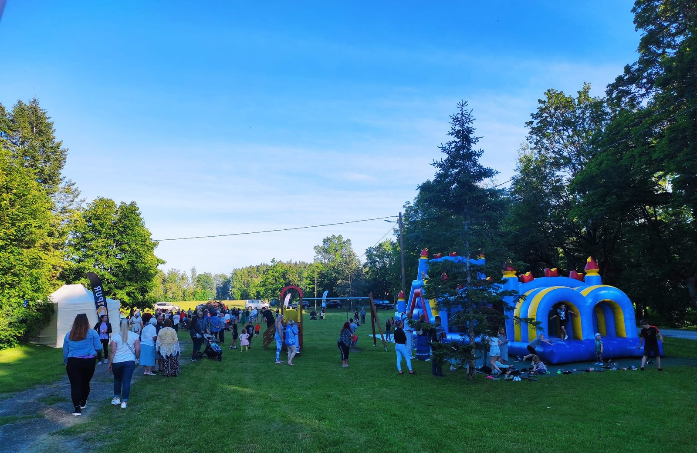

Siia kogume Lasila küla sündmuste kokkuvõtted ja galeriid. Uued toimunud sündmused saab hiljem lisada eraldi alamlehtedena.
Kokkuvõte praktilisest ravimtaimede matkast Viitna järvede radadel.

Kokkuvõte, tänusõnad ja galerii Lasila jaanipäeva peost.